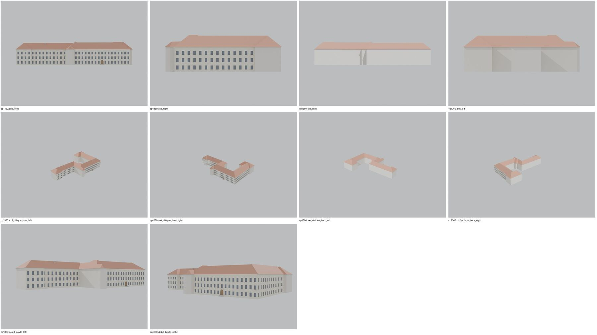
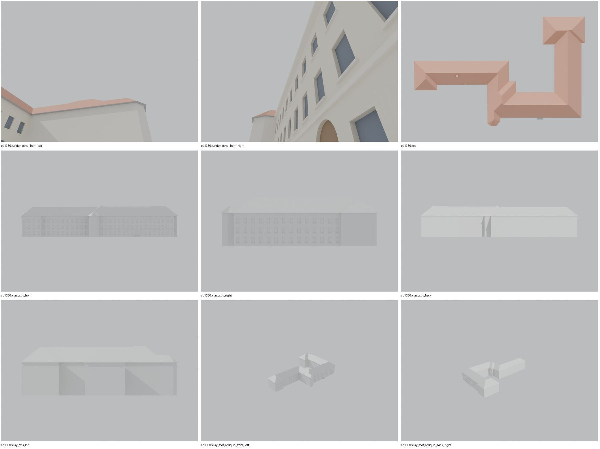

Identita domu
Budova c.k. státního reálného gymnázia (pohlednice P-000045, P-000593 „K.K. STAATS-OBERREALGYMNASIUM“), později průmyslová škola a muzeum („budova nynějšího muzea čp. 1360“ na kartách 1918). Třípodlažní, vysoká valbová střecha s velkým štítem a řadou vikýřů, věžička. Foto cp_1360_001 (1960s).
Použité prameny: cp_1360_001 PLANE+PHOTO; pohlednice P-000045(_2), P-000327(_2), P-000593, P-001040, P-001453.
GIS: GIS id 2937 (2440 m², 22 vrcholů). V oblasti „Cs_Armady“ je dům veden podruhé se stejnými přílohami.
Prameny (10 příloh)
Všechny přílohy domu v databázi Libuše, každá otevřená a zapsaná v plan_search.json. Stav rešerše plánů: found; situační/střešní náčrt (ruční, nekótovaný, PLANE,BW) – není stavební výkres; půdorysné rozměry z GIS nebo odhad. Kliknutím otevřete větší náhled.

situační náčrt
SHA-256 403c4f43b3a5…

fotografie
SHA-256 a3e7e9b1d3a4…

pohlednice
SHA-256 fbc32bedbe41…

pohlednice
SHA-256 e31e43780bb6…

pohlednice
SHA-256 48323f60078f…

pohlednice
SHA-256 a96b76474887…

pohlednice
SHA-256 162d8f1d9bf2…

pohlednice
SHA-256 a8e066efc462…

pohlednice
SHA-256 681dba49b9b4…

archivní karta (rub) · výřez textu
SHA-256 ad3835048fc0…
Model
| Revize modelu | r4 (zachované revize: r1, r2, r4) |
|---|---|
| Poloha | GIS půdorys id 2937 |
| Šířka průčelí | 47,73 m |
| Výška okapu | 13,50 m (odhad) |
| Podlaží | 3 |
| Střecha podle pramenů | valbová, štíty, vikýře |
| Střecha v modelu | valbová nad nepravidelným půdorysem (přímá kostra) |
| Otvory | 135 |
| Vikýře / vedlejší hmoty | 0 / 0 |
| Polygonů | 2176 |
Zdroje rozměrů, jak jsou zapsány v plánu modelu
| Rozměry | GIS id 2937 polygon (front 47.7 m, wings) |
|---|---|
| Průčelí | postcards P-000045/P-000593 (K.K. Staats-Oberrealgymnasium): 3 storeys, regular window grid, high hipped roofs with gable and dormers; photo cp_1360_001 |
| Střecha | massing hypothesis: constant-pitch straight skeleton 40 deg |
Kontrola r4: brána geometrie a 19 pohledů
Automatická brána (uzavřené podkroví, krytí střechou, UV, síť, počty otvorů proti fotografii s rámečkem) a 19 renderů: čtyři osy, čtyři šikmé pohledy na střechu, dva detaily průčelí, dva pohledy pod přední okap, pohled shora a šest pohledů bez barev materiálů. Stav: prošla.


Nálezy a opravy
- jedna valbová střecha (straight skeleton) nad celým půdorysem U, bez střechy nad dvorem a bez nekrytého zdiva
- pravidelný rastr os = hypotéza, vstup v ose doložen
- pohled pod okap uzavřený
Revize r4: doklad fasád a změny
Okna a dveře se počítají na fotografii s červeným rámečkem po dělicích zdech domu. Řádky oken jsou zdola nahoru; „hypotéza“ jsou otvory, které na snímku vidět nejsou.
| Fasáda | Okna po podlažích | Hypotéza (id otvorů) | Poznámka |
|---|---|---|---|
| main | – + dveře 1 | FG1, FG2, FG3, FG4, FG5, FG6, FG7, FG8, FG10, FG11, FG12, FG13, FG14, FG15, FG16, FG17, FU1, FU2, FU3, FU4, FU5, FU6, FU7, FU8, FU9, FU10, FU11, FU12, FU13, FU14, FU15, FU16, FU17, FT1, FT2, FT3, FT4, FT5, FT6, FT7, FT8, FT9, FT10, FT11, FT12, FT13, FT14, FT15, FT16, FT17 | hlavní vstup doložen; rastr os zakryt stromy = hypotéza |
| left_wing_a | – | LAG1, LAG2, LAG3, LAG4, LAU1, LAU2, LAU3, LAU4, LAT1, LAT2, LAT3, LAT4 | hypotéza |
| left_wing_b | – | LBG1, LBG2, LBG3, LBG4, LBG5, LBG6, LBG7, LBG8, LBG9, LBG10, LBU1, LBU2, LBU3, LBU4, LBU5, LBU6, LBU7, LBU8, LBU9, LBU10, LBT1, LBT2, LBT3, LBT4, LBT5, LBT6, LBT7, LBT8, LBT9, LBT10 | hypotéza |
| right_side | – | RSG1, RSG2, RSG3, RSG4, RSG5, RSG6, RSG7, RSG8, RSG9, RSG10, RSG11, RSG12, RSG13, RSG14, RSU1, RSU2, RSU3, RSU4, RSU5, RSU6, RSU7, RSU8, RSU9, RSU10, RSU11, RSU12, RSU13, RSU14, RST1, RST2, RST3, RST4, RST5, RST6, RST7, RST8, RST9, RST10, RST11, RST12, RST13, RST14 | pravidelný rastr asi 14 os odpovídá pohlednici, přesný počet zakryt |
Pro tento dům není fotografie, na které by šlo fasádu spolehlivě vyznačit.
Změny proti r2/r3
- closed attic, eave closures, gables along the roof underside, flat-roof covering slab, names for tools/most_qa (z4_post.py)
- roof: straight skeleton over the whole U footprint replaces the four rectangular r2 wings (207 m2 hung over the courtyard, 143 m2 of walls uncovered in the gate baseline)
- facade evidence declared (regular grids hypothesis, entrance and right-wing rhythm checked on postcards)
- gate: ground window on the entrance axis removed (its niche cut into the entrance niche, 3 extra niche faces)
Hypotézy
Vše níže je model_hypothesis, provisional, locked: false.
- hmotový model: výšky odhad (římsa 13,5 m), štít a vikýře zjednodušeny
- členění oken pravidelné, odhad
- window grid regular 2.6 m from postcard impression
- gable, dormers and roof lantern of the postcards not modelled
- all storey heights, opening sizes and roof pitches are estimates from photographs (model_hypothesis, provisional, locked=false)
- roof composed of four rectangular hips; junction valleys approximate
- wing roof ends at junctions closed as hips (valley junction approximated)
Soubory
- Model čp. 1360, GLB
- Pracovní složka: F:\MOST\output\zatecka_street_claude_2026-10-17\houses\cp1360\
plan_search.json,geometry_plan.json,README.md,texture_handoff_spec.json,r4/cp_1360_G_r4.blend,r4/qa/qa_review.json, rámečkyframes/cp1360_*